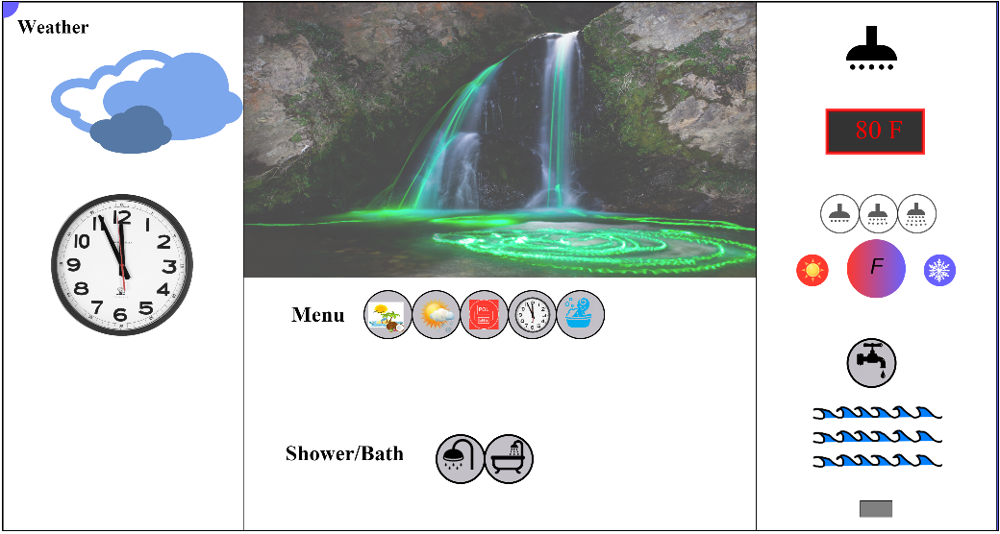

Hi there, This is Shiwangi's webpage for CS422!
Sketches
The above is the loader page when you enter the application.

This is the sketch with full functioanlities in the application.
This image shows the five menu options or preference settings. Also, shown is the Polish language support.

This is the showerhead controls and temperature controls.
This image highlights the rate of flow of control of water from the shower.
The tap fills the tub when bath is prefered.
The above images shows the gradient how the tempearture is controlled. The second image also shows there is a toggle between the tap and the shower rate controls.
Conversion from F to C is controlled by the middle gradient icon.
The above image shows the Weather display. Cloudy means there will be a clouds image appearing on the canvas.
Safety for babies is important. When the baby icon is highlighted, and the temperature is above 100 F or 40 C, automatically the temperature goes down to 80 F or 25 C.
Represents the background imagery. Clicking on the first menu icon changes the scenary.